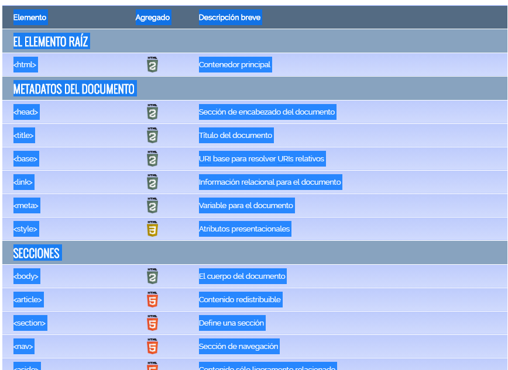

DEFINICIÓN DE HTML5
INDICE
Definición de HTML5
HTML5 es un lenguaje markup (de hecho, las siglas de HTML significan Hyper Text Markup Language) usado para estructurar y presentar el contenido para la web. Es uno de los aspectos fundamentales para el funcionamiento de los sitios, pero no es el primero. Es de hecho la quinta revisión del estándar que fue creado en 1990. A fines del año pasado, la W3C la recomendó para transformarse en el estándar a ser usado en el desarrollo de proyectos venideros. Por así decirlo, qué es HTML5 está relacionado también con la entrada en decadencia del viejo estándar HTML 4, que se combinaba con otros lenguajes para producir los sitios que podemos ver hoy en día. Con HTML5, tenemos otras posibilidades para explotar usando menos recursos. Con HTML5, también entra en desuso el formato XHTML, dado que ya no sería necesaria su implementación.
HMTL5 extiende la definición de lo que puede hacer una página web
Una página web está compuesta principalmente por información de un tema factible (solo texto o módulos multimedia) así como por hiperenlaces; además puede contener o asociar hoja de estilo, datos de estilo para especificar cómo debe visualizarse, y también aplicaciones embebidas para así permitir interacción.
Las páginas web son escritas en un lenguaje de marcado que provee la capacidad de manejar e insertar hiperenlaces, generalmente HTML.
Respecto a la estructura de las páginas web, algunos organismos, en especial el World Wide Web Consortium (W3C), suelen establecer directivas con la intención de normalizar el diseño, y para así facilitar y simplificar la visualización e interpretación del contenido.
Una página web es en esencia una tarjeta de presentación digital, ya sea para empresas, organizaciones, o personas, así como una manera de comunicar ideas, pensamientos, conocimientos, informaciones o teorías.3 Así mismo, la nueva tendencia orienta a que las páginas web no sean solo atractivas para los internautas, sino también optimizadas (preparadas), para los buscadores a través del código fuente. Forzar esta doble función puede, sin embargo, crear conflictos respecto de la calidad del contenido.
El lenguaje HTML5
HTML4 fue “declarado” el lenguaje oficial de la web en el año 2000, y tomó una década para comenzar a implementar el desarrollo de su nueva revisión. Esta nueva generación de HTML, se dice, pronto dominará el desarrollo en internet, pero introduce algunos cambios importantes que veremos dentro de algunas líneas. Por ende, para los desarrolladores de sitios web es importante conocer las ventajas de HTML5, considerando que algunas entidades se están moviendo en esta dirección. No solamente Google con su navegador Chrome, hace unos años, sino también Adobe hace unos meses, que removió el soporte de Flash para Android para dar paso a la llegada de HTML5.
Volviendo a qué es HTML5. Se trata de un sistema para formatear el layout de nuestras páginas, así como hacer algunos ajustes a su aspecto. Con HTML5, los navegadores como Firefox, Chrome, Explorer, Safari y más pueden saber cómo mostrar una determinada página web, saber dónde están los elementos, dónde poner las imágenes, dónde ubicar el texto. En este sentido, el HTML5 no se diferencia demasiado de su predecesor, un lenguaje del cual hablamos hace algunos meses en nuestra guía básica de HTML. La diferencia principal, sin embargo, es el nivel de sofisticación del código que podremos construir usando HTML5.
En términos de Markup, el HTML5 introduce algunos elementos que hacen que se aggiorne a los tiempos que corren. Así, muchas de las novedades están relacionadas con la forma de construir websites que se tiene en la actualidad. Una de las más importantes novedades está relacionada con la inserción de multimedia en los sitios web, que ahora contarán con etiquetas HTML especiales para poder ser incluidos. Por otro lado, algunos aspectos de diseño también son incluidos en el lenguaje, así como también algunos detalles de navegación. Veremos todo esto en algunas líneas.
Breve recorrido por los principales elementos de HTML5

Los elementos "video", "audio" y "canvas"
Insertar un audio
Para insertar un audio tenemos 2 formas:
ivoox u otras webs de audios que permitan compartir vídeos en nuestra web. En
ivoox debemos abrir un audio, pinchamos sobre el botón más (añadir audio a) ->
compartir. -> reproductor, y nos ofrecen varios formatos visuales. Seleccionamos
uno, copiamos el código fuente en nuestro HTML y listo. Si el audio esta en
nuestra propia web debemos usar la etiqueta audio de html5.
<audio controls>
<source src="tiburon.mp3" type="audio/mp4">
</audio>
Ten en cuenta que si el audio se reproduce desde nuestra web, eso implica que
es nuestro servidor el que se encarga de su reproducción.
Insertar un video
Para insertar un vídeo en nuestra web tenemos 2 formas:
Para insertar un vídeo en nuestra web tenemos 2 formas:
Youtube u otras webs de vídeos (vimeo) que permitan compartir vídeos en nuestra web. Para ello podemos abrir cualquier vídeo -> compartir -> insertas y copiamos el código. Si pinchamos en mostrar más podemos configurar su funcionamiento como por ejemplo si queremos que al finalizar salgan otros vídeos de Youtube o no. Truco: Si queremos que el vídeo se inicie y/o finalice en un segundo concreto podemos añadir ?t=56 al final del SRC, siendo 56 el segundo del vídeo.
(Ejemplo: https://www.youtube.com/embed/ux3STlov7Vw?start=20&end=50).
Si el vídeo esta en nuestra propia web debemos usar la etiqueta video de html5.
<video controls width="320" height="200">
<source src="mariposa.mp4" type="video/mp4">
</video>
Ten en cuenta que si el vídeo se reproduce desde nuestra web, eso implica que es nuestro servidor el que se encarga de su reproducción, los vídeos largos y de calidad consumen muchos recursos de servidor.
Insertar diseños gráficos con CANVAS
El elemento canvas sirve para crear un entorno en el que crear dibujos pudiendo crear incluso efectos dinámicos. En si el elemento es muy simple solo es necesario darle unas dimensiones al lienzo:
<canvas id="myCanvas" width="200" height="100" style="border:1px solid #d3d3d3;"></canvas>
El navegador que usas no soporta html5.
</canvas>
En este caso le añadimos un borde, y un mensaje interno por si se abre la web con un navegador que no soporte HTML5.
Elementos "video" y "audio" para incorporar contenidos multimedia
Insertando contenido multimedia
HTML5 introduce soporte integrado para el contenido multimedia gracias a los elementos <audio> y <video>, ofreciendo la posibilidad de insertar contenido multimedia en documentos HTML.
Insertar contenido multimedia en tus documentos HTML es muy sencillo:
<video src="http://v2v.cc/~j/theora_testsuite/320x240.ogg" controls>
Tu navegador no implementa el elemento <code>video</code>.
</video>
Este ejemplo reproduce un vídeo de ejemplo, con los controles de reproducción, desde el sitio Web de Theora.
Este es un ejemplo para insertar audio en tu documento HTML.
<audio src="/test/audio.ogg">
<p>Tu navegador no implementa el elemento audio.</p>
</audio>
El atributo src puede ser una URL del archivo de audio o la ruta al archivo en el sistema local.
<audio src="audio.ogg" controls autoplay loop>
<p>Tu navegador no implementa el elemento audio</p>
</audio>
Este código de ejemplo usa los atributos del elemento <audio>:
• controls : muestra los controles estándar de HTML5 para audio en una página web.
• autoplay : hace que el audio se reproduzca automáticamente.
• loop : hace que el audio se repita automáticamente.
<audio src="audio.mp3" preload="auto" controls></audio>.
• El atributo preload es usado en el elemento audio para almacenar temporalmente (buffering) archivos de gran tamaño. Este puede tomar uno de 3 valores:
"none" no almacena temporalmente el archivo.
"auto" almacena temporalmente el archivo multimedia.
"metadata" almacena temporalmente sólo los metadatos del archivo.
Se pueden especificar múltiples fuentes de archivos usando el elemento <source> con el fin de proporcionar vídeo o audio codificados en formatos diferentes para diferentes navegadores. Por ejemplo:
<video controls>
<source src="foo.ogg" type="video/ogg">
<source src="foo.mp4" type="video/mp4">
Tu navegador no implementa el elemento <code>video</code>.
</video>
También puedes especificar qué codecs requiere el archivo multimedia; de esta forma el navegador tomará decisiones más inteligentes:
<video controls>
<source src="foo.ogg" type="video/ogg; codecs=dirac, speex">
Tu navegador no implementa el elemento <code>video</code>.
</video>
Aquí, especificamos que el vídeo usa los codecs Dirac y Speex. Si el navegador implementa Ogg, pero no los codecs especificados, el vídeo no será cargado.
Formularios web
Un formulario es un conjunto de controles (botones, cajas de texto, casillas de verificación, botones radio, etc) que permiten al usuario introducir datos y enviarlos al servidor web para su procesamiento.
La etiqueta que delimita un formulario es la etiqueta <form> ...</form>. Los atributos más importantes de la etiqueta <form> son:
• action: contiene el nombre del agente que procesará los datos remitidos al servidor (por ejemplo, un script de PHP)
• method: define la manera de enviar los datos al servidor. Los valores posibles son:
• get: los valores enviados se añaden a la dirección indicada en el atributo action
• post: los valores se envían de forma separada
Si el atributo method no está establecido, el formulario se comporta como si el valor fuera get.
La etiqueta <form> es un elemento de bloque. En su interior puede haber cualquier elemento típico de una página web (párrafos, imágenes, divisiones, listas, tablas, etc.), además de las etiquetas que crean los controles.
Las etiquetas que crean los controles en los formularios son <input>, <button>, <select>, <optgroup>, <option> y <textarea>. Además, se pueden estructurar los controles con las etiquetas <fieldset> y <legend>. Por último, la etiqueta <label> permite mejorar la accesibilidad de los controles.
El navegador envía únicamente los datos de los controles contenidos en el formulario. En una misma página puede haber varios formularios que envíen datos al mismo o a diferentes agentes.
El atributo name
El atributo name identifica al control.
Todos los controles de un formulario deben tener el atributo name porque, en general, sólo se envían los controles que lo tienen (aunque hay excepciones, como los controles de tipo imagen o los botones, que no los necesitan).
En general, los atributos name no se deben repetir, porque no se recibiría toda la información al enviarla. La única excepción es el botón radio, como se explica en el apartado correspondiente.
El atributo value
El atributo value permite establecer el valor inicial de un control, aunque cada control lo utiliza de una forma ligeramente distinta y algunos controles no lo admiten (área de texto, archivo o imagen).
En algunos casos (botones) el valor se muestra al usuario y el usuario no puede modificarlo. En otros casos (cajas de texto, contraseña) el valor se muestra en la página y el usuario puede modificarlo. En otros casos (casillas de verificación, botones radio, opciones de menú, oculto) el valor no se muestra en la página y el usuario no puede modificarlo.
En algunos casos (botones, oculto, botones radio) el atributo value es necesario. En otros casos (casilla de verificación, opciones de menú) es conveniente. En otros casos (cajas de texto, contraseña, imagen) puede omitirse. En el caso del selector de archivo, los navegadores no lo admiten por motivos de seguridad.
El atributo required permite indicar qué controles es obligatorio rellenar para enviar el formulario.
Muchos elementos nuevos en HTML5
Este artículo veremos brevemente cómo se han elegido los nuevos elementos semánticos, cuáles son las principales novedades y cómo utilizarlos, cómo funcionan los encabezamientos de HTML5 y el soporte de los navegadores para estos nuevos elementos, incluyendo cómo puede añadirse soporte a navegadores antiguos.
HTML5 nuevos que vamos a cubrir en este artículo son:
• <header> (cabecera): Se utiliza para contener la cabecera de un sitio.
• <footer> (pie de página): Contiene el pie de página de un sitio.
• <nav>: Contiene la funcionalidad de navegación para la página.
• <article> (artículo): Contiene una pieza independiente de contenido, que tendría sentido sindicar como elemento RSS como, por ejemplo, una noticia.
• <section> (sección): Se utiliza bien para agrupar artículos en diferentes temas, bien para definir las diferentes secciones de un solo artículo.
• <time> (hora): se usa para marcar tiempos y fechas.
• <aside> (aparte): Define un bloque de contenido relacionado con el contenido principal que lo rodea, pero que no es esencial para el flujo del mismo.
• <hgroup> (heading group, o grupo de encabezados): Se utiliza para incluir más de un encabezado si quieres que cuente como un único encabezado en la estructura de encabezado de la página.
• <figure> y <figcaption>: Se usan para encapsular una figura como un único elemento y contener el título de la figura, respectivamente.
Web Workers
Web Workers es otra API que se suele considerar de la familia HTML5. Web Workers es un marco de programación que resuelve problemas de rendimiento de los navegadores. Al acceder a aplicaciones web avanzadas, como las de mapas o aquellas que generan gráficos o diagramas al entrar en la página web, se inician ciertas operaciones de computación que consumen una gran cantidad de recursos de procesador y que pueden reducir notablemente el rendimiento de la aplicación. Gran parte de la ralentización es debida a que se produce un conflicto a nivel de máquina entre las tareas interactivas de usuario (pulsación del ratón, arrastre, etc.) y la necesidad de la propia aplicación de acceder a recursos como datos, tarjeta gráfica u otros.
Almacenamiento Web
El Almacenamiento Web (Web Storage) es un ejemplo de uso de modelos preexistentes de tecnologías web bajo nuevas modalidades, más potentes. El Web Storage mejora el concepto de cookies del navegador. Las cookies son una tecnología bastante limitada y no resulta fácil su utilización por parte de los diseñadores web. Ahora, Web Storage actualiza este modelo para que las aplicaciones web puedan almacenar una cantidad de datos muy superior y que su acceso y utilización sea mucho más fácil y eficiente.
HTML5 nos ofrece dos maneras de guardar datos: localStorage y sessionStorage. Los datos guardados con localStorage quedan a disposición del navegador en todo momento, aunque cerremos el programa o se reinicie el sistema. Los datos guardados bajo la modalidad sessionStorage se pierden al cerrar el navegador.
CSS3 no forma parte de HTML5, pero está íntimamente relacionado
muchos de los aspectos novedosos designados bajo el nombre "HTML5" son en realidad una combinación de las tecnologías HTML5 descritas antes junto con JavaScript o CSS3. Algunos componentes de CSS3 suelen considerarse erróneamente como componentes de HTML5, como es el caso de las transiciones o la animación. A continuación describimos brevemente algunas de las características más relevantes de CSS3.
Transformaciones CSS 2D y 3D
La propiedad transform de CSS nos permite rotar, cambiar la escala o sesgar un elemento de una página web. Un ejemplo puede ser el girar levemente una foto dentro de una página para conseguir un efecto estéticamente muy atractivo. También podemos dar animación a las transformaciones: por ejemplo, mediante animación aplicada a la propiedad "scale" podemos conseguir un efecto de ampliación o reducción del tamaño de una imagen o de cualquier otro elemento. Podemos también añadir la propiedad "perspective" al efecto de transformación para simular la visión de un objeto en un espacio tridimensional, estático o en movimiento.
Fondos, bordes, colores RGBa, gradientes, sombras y esquinas redondeadas
Ahora, con CSS3 es posible aplicar mejoras muy interesantes a la presencia visual de una página. Un ejemplo sencillo es la propiedad "border-radius", con la que podemos poner esquinas redondeadas a los objetos rectangulares, y también podemos crear muchos efectos nuevos, como gradientes de color o sombreados. podemos utilizar la propiedad border-image para utilizar imágenes como bordes de objetos, o añadir varias imágenes de fondo a un mismo contenedor, evitando así la limitación actual a una sola imagen que permite la propiedad background-image. La descripción del espacio de color RGBa es otra novedad de CSS3, ya que la "a" representa el grado de transparencia (o "alpha").
Fuentes de letra Web @font-face
Cada vez está más extendido el soporte para añadir tipos de letra especiales a las páginas web mediante la propiedad @font-face.
Esta característica puede cambiar de forma radical el aspecto de las páginas web, pero lamentablemente también se ve afectada por los muchos problemas de compatibilidad con navegadores antiguos que se pueden ver en otras funcionalidades de HTML5.
Con la regla @ font-face, los diseñadores web ya no tienen que utilizar una de las fuentes “seguras para la web”.
En la regla @ font-face, primero debe definir un nombre para la fuente (por ejemplo, myFirstFont) y luego apuntar al archivo de fuente.
Media Queries de CSS
La interacción del usuario con Internet se basa casi de forma exclusiva en lo que se puede ver dentro de una pantalla, y el tamaño de las pantallas que podemos encontrar varía enormemente.
El reto que supone presentar una experiencia equivalente en ambas pantallas puede resolverse mediante las nuevas directivas de CSS de consulta de tipo de medios ("media queries"). En esencia se trata de lanzar una consulta al navegador para determinar el tipo de pantalla en el cual se va a restituir la página y, a partir de esta información, enviar un estilo específico, optimizado para esas dimensiones.
Animaciones con CSS
Ciertas tecnologías como Flash o Silverlight se han venido utilizando hasta ahora para animar objetos dentro de las páginas web. Ahora ya podemos conseguir algunos de estos efectos utilizando las reglas y propiedades de CSS3. En el futuro, el elemento Canvas de HTML5 y las transiciones de CSS3 permitirán crear elementos animados e interactivos sobre la página. Las animaciones de CSS, y el tema siguiente, las transiciones, probablemente estarán soportadas por la mayoría de los navegadores en los próximos años.
Transiciones de CSS
Las transiciones de CSS están muy relacionadas con el concepto de animación, pero son algo completamente distinto. Una transición permite variar el valor de una propiedad CSS de manera continua a lo largo de un intervalo de tiempo definido.
¿Cómo utilizar las transiciones CSS?
Para crear un efecto de transición, debe especificar dos cosas:
• La propiedad CSS a la que desea agregar un efecto.
• La duración del efecto.
HTML5 está en un momento de transición
Las tecnologías que hay detrás de HTML5 están en fase de transición, por lo que es necesario tener claro cuándo debemos utilizarlas y cuándo no. Todos los navegadores de mayor difusión hoy en día ofrecen soporte, en grado variable, para las funcionalidades de HTML5 en cuanto a su sintaxis y tecnologías relacionadas.
¿Quién utiliza HTML5 a día de hoy?
Un área donde el uso de las funcionalidades de HTML5 está siendo muy activo es entre los dispositivos móviles y smartphones. En este mundo podemos encontrar aplicaciones web que aprovechan las ventajas de los nuevos tags de Video o Audio, puesto que ciertos dispositivos como Windows Phone o iPhone soportan HTML5 pero no soportan complementos como Flash o Silverlight. Además, todos los navegadores web de mayor difusión apuestan por HTML5 en sus últimas versiones.
Funcionalidades y características futuras de HTML5
Drag and Drop: Permiten al usuario mover en pantalla los elementos de forma visual en lugar de hacerlo pulsando botones.
La API File (Archivo): Permite a los desarrolladores acceder a archivos del disco duro de la máquina cliente sin necesidad de instalar extensiones o complementos.
Disposición de objetos en pantalla con Flexbox: Su objetivo es ofrecer herramientas más fiables y potentes a los diseñadores y desarrolladores para crear estructuras visuales complejas, válidas para la web y para dispositivos móviles.
Distribuciones en rejilla y columnas múltiples: Permite distribuir un contenido en dos o más columnas, facilitando así su lectura sin tener que recurrir a complicados juegos visuales.
Identificación de sitios web basados en HTML5
En enero de 2010 el W3C presentó el logo de HTML5 para uso público, con el cual quieren promocionar las nuevas capacidades de HTML5 y sus tecnologías asociadas. Este logo puede obtenerse como archive gráfico y se puede incorporar a los sitios web o cualquier otro contenido para indicar que se utiliza esta tecnología.
Conclusiones
Elda Priscila Fabela Paez
Con esta practica podemos ver lo importante que es HTML y la variedad de etiquetas y funciones que tiene en conjunto con CSS. En la actualidad, tener una página web nos brinda credibilidad ante los clientes potenciales y nos ayuda a ser visibles en los buscadores, de ahí la importancia de crear una estructura en la que el contenido resulte relevante. Por lo cual es fundamental aprender como funciona la estructura HTML.
Diego Javier Saucedo Jiménez
Se podría decir que HTML5 es parecido a HTML, resaltando que HTML5 tiene sus propias etiquetas y características que ayudan tanto al desarrollador como al usuario a tener una mejor experiencia al crear o al navegar por alguna página web. Esto sin duda es un beneficio enorme que valdrá la pena probar y poner en práctica.
Estefani Denisse Gallegos
Las etiquetas para introducir audio, video y canvas sirven para hacer más dinámica la página web, también como los formularios sirven para rellenar la información que se solicite de una manera mas acomodada
Carlos Rafael Garcia Hernández
Este tipo de herramientas permiten personalizar sitios web y lograr crear cosas únicas y con esto conseguir que la experiencia del usuario sea fascinante e intuitiva para generar interés y lograr que más gente pueda usar un sitio web.
Paulina Leon Zabalgoitia
En esta practica podemos notar como es que un lenguaje como html5 es tan variado, como es que este se puede implementar de varias formas, pero principalmente enfocado en paginas web. Podemos notar todo lo que se puede hacer, desde crear opciones, hacer estilos, y personalizar por completo una pagina web. También se vieron varias etiquetas para poder lograr esto, como es que es su sintaxis y en que momento puede ser utilizada y para que, esto nos puede ser muy útil al momento de crear dichas páginas, ya que de esta manera se pueden crear todo tipo de funciones y estilos.
Me parece un conocimiento muy necesario ya que en nuestra vida diaria estamos en contacto con todo tipo de paginas web, las cuales usualmente están hechas o implementadas con este tipo de lenguaje html5 e incluyendo en su mayoría, ya sea JavaScript o CSS, por esto creo que el poder entender de donde viene todo esto, que es cada cosa, cada parte del código es bastante necesario y útil.